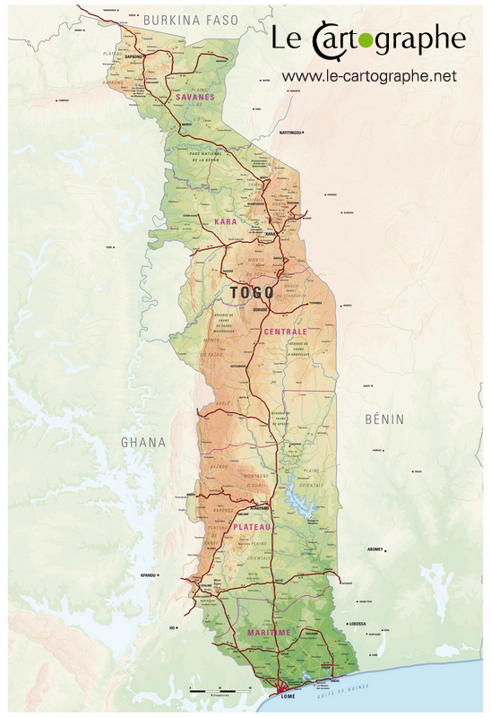
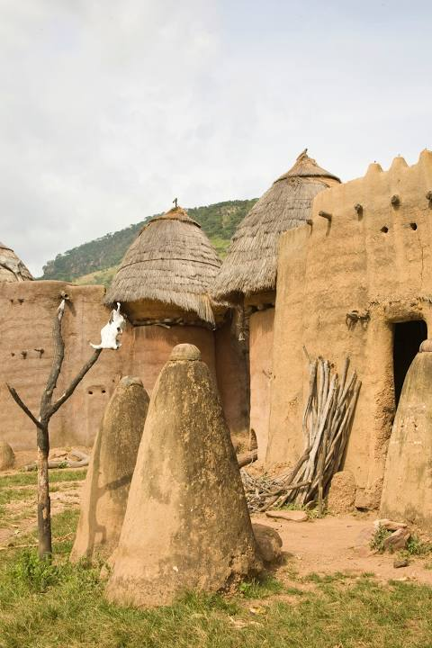
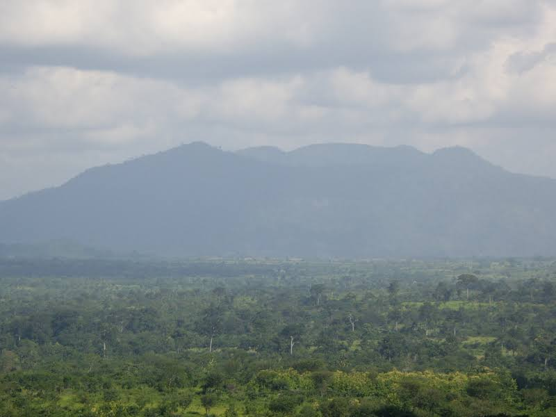
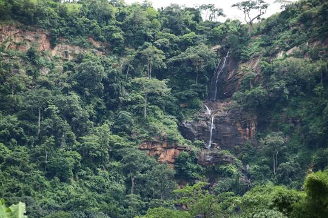
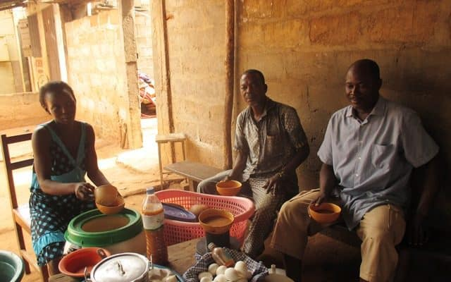
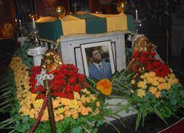

Le Togo est un pays d'Afrique de l'Ouest situé dans le golfe de Guinée avec une superficie de 56600 km carré. Il est connu pour ses plages bordées de palmiers et ses villages au sommet des collines. La région du Koutammakou est habitée par le peuple des Batammariba, occupant des huttes en argile traditionnelles ressemblant à des forteresses qui remontent au XVIIe siècle. La capitale Lomé est dotée d'un bazar sur plusieurs étages appelé Grand Marché ainsi que du Marché aux fétiches qui propose des remèdes et des talismans traditionnels en rapport avec le culte vaudou.
places à visiter(avec liens vers google maps)
1)Koutammakou, the Land of the Batammariba

2)Mont Agou
aller

Le mont Agou est le plus haut sommet du Togo, culminant à 986 mètres d'altitude et se situant entre Amoussoukope et Kpalimé. Il représente le point le plus élevé de la chaîne de l'Atacora qui s'oriente sud-ouest / nord-est, et qui s'étend d'Accra au fleuve Niger, en coupant le Togo en arc de cercle. La montagne est couverte de forêts denses et on y trouve de nombreux petits villages éwés. Le sommet est un terrain militaire protégeant un relais de
3)Cascade de Kpimé
visiter

Anecdotes
- le tchouk

De la bière locale, il y en a plusieurs variétés au Togo, avec des saveurs et des particularités diverses. Mais, le Tchouk, préparé sous divers noms chez les Kabyè, les Losso, les Moba, et autres peuples du Nord Togo, se particularise par son audience et sa capacité à être un véritable vecteur participant à la sociabilité et à la cohésion sociale. Prisée de beaucoup de Togolais, cette boisson était destinée, à l’origine, aux cérémonies de tout genre. Elle est, aujourd’hui, une source de revenu pour de nombreuses brasseuses qui rivalisent sur le marché avec la bière industrielle, une boisson pas toujours à la portée de toutes les bourses.
image des grands Anecdotes du Togo

funeraille de l'ancien president
la listes des gardiennes du Togo